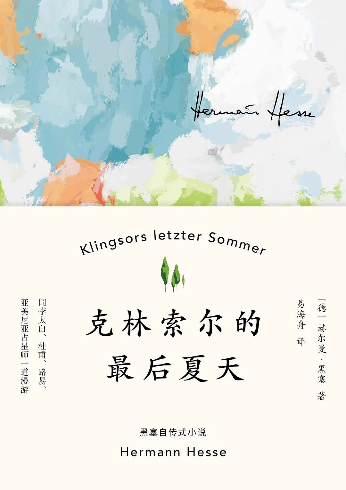

读《克林索尔的最后夏天》
{kind=link}

《克林索尔的最后夏天》 是 赫尔曼·黑塞 在 1919 年写的自传式小说。当时在书店看到这本书，先是被它油画一般的封面吸引；而书的名字「最后的夏天」，也让我产生了一些期待，夏天总是热烈的，天格外的蓝，云格外的白，晚霞也格外的浪漫，在这样的季节里，会发生怎样的故事？抱着这样的期待，买了这本书。
1919 年，持续了四年的第一次世界大战刚结束，整个世界被战争撕裂得支离破碎，原来熟悉的世界变得陌生。彼时的黑塞，经历了父亲的离世、三子的病逝以及德国民族主义者的谩骂攻击，精神濒临崩溃，再后来和妻子分居，独自迁居至瑞士生活，而克林索尔的故事就发生在瑞典。
在一个新的地方开始生活，脱离桎梏，重获自由，恰逢一个热烈、灿烂的夏日，四十二岁的克林索尔似乎知道自己即将死亡，他渴望尽情地度过这个夏天，就像那些高考结束后的高中生，想趁着暑假尽情玩乐一样。克林索尔的最后夏天，他和朋友结伴出游、欣赏风景、画画、大口喝酒、渴望女人、和女人调情、恐惧着死亡。那个夏天应该是尽兴的、烂漫的，但死亡逐步逼近，也是忧郁的。
或许黑塞也是在那段时间精神上比较动荡，也是度过了一段荒唐迷茫的生活，而最终他重新找到了安宁。在《克林索尔的最后夏天》之后，他写出了 《悉达多》、《荒原狼》 等作品，更完整地叙述了寻找自我，寻找内心安宁的故事。
《克林索尔的最后夏天》分成两个部分，前半部分是中篇小说《克林索尔的最后夏天》，后半部分则是一些随笔和诗，大概是黑塞在瑞典独自漫游时的一些记录，有一些他关于爱、思乡、漫游、死亡、神、信仰的思考。
说实话，书的内容我没太看懂，或许就是黑塞记录了自己某段时间内心的挣扎，当他终于挣扎出来后，形成了这部中篇小说。而后半部的漫游，则是在挣扎时，选择出去走走，大自然是广阔的，走一走总比宅在家里强。
如果你感兴趣阅读，在读之前，先读一下黑塞写的后记会更有帮助，能够知道黑塞是处于什么背景下创作的内容。
《克林索尔的最后夏天》的后记
自克林索尔的夏日闪耀，
已经过去十年
我与他，在一个个温暖长夜
伴着美酒佳人迷离绽放
唱着克林索尔醉酒的歌！
我现在的夜晚是多么清醒而不同，
随之降临的白日又是多么安宁！
即便有一个咒语将我带回
那时的迷狂——我也不想再要了。
默认血液中安宁的死亡，
不再索求荒唐，
是我如今的智慧和善良。
把握一种新的幸福，新的魔力
自此，我有时就只是镜子，
像月亮倒影在莱茵河中那般，
任星星、神明与天使倒影其中，
持续数小时。
1929年9月17日
《克林索尔的最后夏天》诞生于那个对我、对世界来说都非比寻常、独一无二的夏天。那是1919年，四年的战争终于结束了，世界似乎被轰成了碎片。成千上万的士兵、战俘和民众，从多年僵化统一的顺服中，回归既向往又恐惧的自由。那场战争及大独裁者已死亡、被埋葬；变了的、穷了的世界，空空等待着我们这些被释放的奴隶。人人都热切渴盼这个世界和它当中的自由运动，但人人也恐惧释放和自由，恐惧变得陌生的私人领域，恐惧每一种自由所意味的责任，恐惧经长久压抑、几乎变得敌对的激情，恐惧自己心中的可能与梦想。
这新的氛围如同一剂迷幻剂作用于不少人。许多人在这获得自由的时刻却只有一种兴趣：将自己数年来为之流血奋斗的一切砸成废墟。人人都有一种感觉，像失去了什么，耽误了什么，一些生活，一些自我，一些成长、调整和生活趣味。有些年轻人在被战争拖走时，还活在童年世界里呢，他们现在“回归”了，却发现所谓的现实世界是完全陌生的、莫名其妙的。而我们这些更老的人当中有许多认为，他们最重要、最珍贵的年华被夺走了，现在想重新开始、与年轻人竞争却为时已晚。
尽管年轻人也没啥可羡慕的，但至少还一直有机会，从一个坚硬冰冷、迟钝无趣的世界中苏醒新生，而我们这些老人却来自旧时代，那些曾被我们高度认同的世界观如今却成了可笑荒唐的明日黄花。时代惊人地变快了，更年轻的人们不再以年龄段、时代或至少五年期来计量时间，而是以每一年，所以相信 1903 年的人与相信 1904 年的人已经有代沟了。一切都变得可疑，令人不安，甚至常常让人惊恐。
但在这样一个可疑的世间，在一些好的时刻，也似乎一切皆有可能，新的维度展开了。比如说我，一个曾被战争贬低与强暴，现在重回个人生活的诗人，有时会希望不可能的事情发生，希望世界回归理性与团结，重新发现灵魂，重新释放美丽，重新被神明召唤——这些都是我们在大崩溃之前曾经相信过的。无论如何，我自己除了回归作诗的世界，也看不到别的出路了，不管这个世界是否还需要诗歌。战争年月的动荡与伤害几乎完全摧毁我的人生，如果我要重新振作，为人生赋予意义，就必须通过激烈的内省与转变，向迄今为止的一切告别，尝试着，回到天使身边。
直到1919年春天，“关怀战俘营”才解除我的职位。我独自在空空的荒宅中找到了自由，一整年既无灯光也无暖气。我过去生活留下的东西也不多了。于是我向它们告别，打包了我的书、衣物和写字桌，锁上那座荒宅，寻找一处可让我在全然寂静中，独自从头开始的地方。这个叫蒙塔诺拉的地方，提契诺的小村镇被我找到了，在其中居住多年直到今日。
有三件事的到来让1919年的这个夏天变得非比寻常、独一无二：从战争回归生活，从桎梏回归自由（这是最重要的一件）；南方的氛围、气候和语言；一个如同恩赐般从天而降的夏天。这种夏天我从前很少经历过，充满力量与光芒、诱惑与魅力，像浓烈的葡萄酒一样裹挟我、穿透我。
这就是克林索尔的夏天。闪耀的日子里，我在村落间和栗林里漫步，坐在折叠椅上，尝试用水彩保存下稍纵即逝的流光溢彩；在温暖的夜里，我在克林索尔宫殿那些开着的门窗前一直坐到很晚。我的写作技法比绘画更为熟练与严谨，我便用字句来歌唱这个永不停止的夏天。于是画家克林索尔的故事便诞生了。
赫尔曼·黑塞 1938年
摘录
一个更热情更短暂的夏天开始了。这些炎热白日虽然漫长，却如旗帜般燃烧，在熊熊火焰中消逝。短暂潮湿的月夜连着短暂潮湿的雨夜，一如梦境倏忽幻化，激荡着一周周的光华。
[…]
克林索尔着单衣站在阳台上，光臂撑着铁护栏，有些烦闷地用灼灼双眼看着 天地的书写 ：泛白夜空中散落群星，树云暗影中透出微光。孔雀提醒了他，对啊，又是夜已深，现在无论如何都该睡了，必须设法睡着，或许安睡几晚，每晚真正睡上六至八个钟头，人就能缓过来了，眼睛也变得听话、耐用，心也会平静些，夜眠不再有痛苦。可若这样，夏天就溜走了，这些璀璨的极乐夏梦也都没了：千杯未喝的美酒佳酿泼洒了，千个未遇的爱意眼神碎裂了，千张未及欣赏的图景，一去不返地湮灭了！
⸺ 《克林索尔》
熬夜不想睡的人大概都是这么想的吧。
他突然笑着直起身子。倏忽想起：已多次这么觉着，这么想着，这么怕着了。他在人生中所有美好、丰盛、灿烂的时期，甚至早在青春期，都是这么过的：像根两头燃烧的蜡烛，怀着一种悲欣交集的感触纵情燃烧；怀着一种绝望的渴求喝光杯中酒；怀着一种幽隐的恐惧面向终亡。他已常常这么活着了，常常这样举杯痛饮，常常这样熊熊燃烧。终亡时而变得温和，像一场无知无觉的深度冬眠；时而又变得可怖，是虚无荒凉、难忍之痛，是医生、悲伤的放弃、懦弱的胜利。而每一个盛放期的终亡，都比前一个更糟，更有毁灭性，但他也都挺过来了。于是，在数周或数月后，在折磨或麻木后，又迎来新生，迎来新的燃烧，被压抑的火又一次破土而出，他会创作新的灿烂画作，闪耀新的生命激情。一直就是这么过来的，而那些自我否定和自我折磨的时期，那些愁闷的低潮期，则沉没、被遗忘。这样挺好。这一回也该与往常一样吧。
[…]
他合上眼想着吉娜，想着浣衣女的劳作间。天神哪，千万种事物在等待，千万杯酒已斟满！这世上就无不该被画之物件！就无不该被爱之女子！为何要有时间？为何总是愚蠢地按部就班，而非澎湃地同时进行？为何现在自己躺在床上，如同一位鳏夫、一位老人？在整个短暂生命中都可去享受，去创造，但人们却总是一曲接一曲地唱，却未曾与一切人声乐器共鸣，创造出完美大交响。
[…]
很久以前，十二岁时，克林索尔就是有十条命的。那时男孩子们玩强盗逃脱游戏，每个强盗都有十条命，若被追赶者的手或标枪碰到，便会失去一条命。不管剩六条命、三条命还是一条命，人都有机会逃脱，只有丢了十条命才会失去一切。不过，克林索尔要用尽十条命才会感到自豪；而如果他只用九条、七条命便逃脱了，反而觉得羞耻。他曾经就是这样的男孩子，在那个不可思议的时代，对他来说世间没什么是不可能的，没有什么是艰难的，克林索尔爱着一切，统领一切，拥有一切。他便一直这样向前进，这样带着九条命活着。就算从未抵达圆满，从未实现澎湃的大合唱，他的歌谣也从不单调贫瘠，相比于别人，他总有更多弹奏的琴弦，更多扔进火里的钢铁，更多背囊里放的塔勒，更多车上载的玫瑰！谢天谢地！
⸺ 《克林索尔》
“一切绘画到底有价值吗？”路易赤身躺在橄榄山的草地上，后背被阳光晒得通红。“人们画画只是因为没有更好的事做，我亲爱的朋友。如果你恰有喜爱的女孩在怀中，恰有今天想喝的汤在盘中，你就无须用这种疯狂的儿童游戏来折磨自己了。自然界有万千色彩，而我们却执意要将色谱减至二十阶。这就是绘画。你永远无法从中获得满足，而且还要喂养评论家。恰恰相反，一碗美味的马赛鱼汤，亲爱的，配上一杯温润的勃艮第红酒，再来一块上好的米兰炸肉排，梨与古冈左拉干酪作为甜点，配土耳其咖啡——这才是真实，我的先生，这才是价值！你们巴勒斯坦地区的人吃的是有多差啊！哦，神哪，我希望自己是一棵樱桃树，嘴中长出樱桃来，而我身上靠的梯子上，恰好站着我们今早遇见的那位棕色皮肤的激动少女。克林索尔，别画了！我请你去拉古诺吃饭，很快就到饭点了。”
[…]
“你自己也喜欢的。看吧，如果你不曾画出这样的一些东西，那所有的好酒好菜、美女咖啡也于你无益，你只是个可怜鬼。但有了这些画，你便是个富足鬼，是个人们喜欢的家伙。看哪，路易吉，我有时也和你想的一样：我们的一切艺术只是补偿，只是对被浪费的生命、活力与爱欲的补偿。这份补偿勉强费力，代价还高出十倍。但其实并非如此。人们太高估感官愉悦了，将精神生活看作是对缺失的感官体验的补偿。然而，感官并不比精神更具价值，反之亦然。因为一切都是合一的，一切都同样美好。无论你是抱一位女子，还是作一首诗，都是一样的。只要那个核心在，即爱、热望和激情在，它们便是一体，无论你是在阿索斯山做隐修僧，还是在巴黎做花花公子。”
[…]
但路易并不喜欢看到这些脆弱，它们折磨他，向他索要同情。克林索尔习惯了向这位朋友敞开心扉，却太晚才明白，这样做恰恰令自己失去朋友。
路易又开始谈论远行了。克林索尔知道，只能留他数日，也许三天，也许五天，他就会突然拿出打包好的箱子，踏上旅途，很久都不再回来。生命是多么短暫啊，逝者如斯夫！路易是所有朋友中唯一完全理解自己艺术的人，其创作也与自己的相近相似、不分高下。然而自己却令他感到害怕、厌烦和生气，凉了他的心，只因自己愚蠢的脆弱和懒惰，因这幼稚而无礼的索求：在一位朋友面前不管不顾，无所保留，不顾形象。多么愚蠢，多么孩子气啊！克林索尔这样自责。然而太晚了。
⸺ 《路易》
战争已把从前的一切衬得像天堂了，哪怕最无趣、最不起眼的那些。
[…]
“奇怪啊，”克林索尔说道，“人需要多少时间，才能熟悉这世界的一点点！我几年前曾去过一次亚洲，夜里坐着高速火车，途经离这儿六或十公里之处，却对此处一无所知。我要去亚洲，这在当时是很迫切的，我必须那么做。但我在亚洲找到的一切，如今在这儿也能找到了：古老森林、炎热、美丽而放松的陌生人、阳光、圣殿。人需要这么长的时间才能学会，在一天之内寻访地球三处地方。它们就在这儿。欢迎你，印度！欢迎你，非洲！欢迎你，日本！”
⸺ 《卡雷诺日》
我亲爱的，夏空中的星！你写给我的信是多么美好真诚啊，而你的爱又是这样疼痛地呼唤我，像永久的苦楚、永久的指责。但是，你向我，向你自己，承认内心的每一种感受，这是好的。只是莫小看和鄙视任何一种感受！好的，每一种都是极好的，包括怨恨，包括羡慕、嫉妒、残酷。我们为体验这些可怜的、美妙的、灿烂的感觉而活，每一种被我们排斥的感情，都是一颗被我们熄灭的星星。
[…]
可爱的纤长女子啊，不幸我未能找到言语来表达思想。被表达的思想总是死的！我们让它们活着吧！我深深感觉到，你是如此理解我，我们是如此相近，为此也心怀感激。我不知生命之书将如何记录我们的情感，是爱情、欲望、感激，还是同情，是母性的还是孩子气的。有时我像个精明的老色鬼一样注视女人，有时又像个小男孩一样看着她们。有时是至纯的女子，有时又是最放浪的女子最能吸引我。我所能爱的一切都是美的，神圣的，无限美好的。为什么，多久，何种程度，这些无法量化。
⸺ 《克林索尔给伊迪斯的信》
“忧郁，”他说，瞥向克林索尔这边，“是人不该背负的东西。很简单，就是一小时的功课，短暂激烈的一小时，咬紧牙关，然后人就再也不必承受忧郁了。”
[…]
“每个人都有他自己的星星，”克林索尔缓缓说，“每个人都有自己的信仰。而我只相信一点：沉没。我们乘坐的马车驶于深渊之上，马儿们都害怕了。我们在沉没，我们所有人，我们必须死亡，我们必须重生，大转折为我们而来。到处都一样：大型战争，艺术大变革，西方国家大崩溃。老欧洲曾经属于我们的一切美好都死去了；我们美丽的理性也变成了疯狂，我们的钱成了废纸，我们的机器只会射击和爆炸，我们的艺术是自杀。我们在沉没，朋友们，命中注定，清徵调已奏响。”
亚美尼亚人斟了酒。
“如您所愿，”他说，“人们可以说是，也可以说不，这只是稚童游戏。沉没是不存在的。上升或沉没的前提是高低之分。但高与低是根本不存在的，那只存在于人们的头脑里，在错觉之乡。一切二元对立都是错觉：黑与白是错觉，生与死是错觉，善与恶是错觉。只需一小时功课，辉煌的一小时，咬紧牙关，人便可摆脱错觉的统治。”
克林索尔聆听着占星师和善的声音。
“我在说我们，”他答道，“我在说欧洲，我们的老欧洲，两千年来一直相信自己是世界的头脑。它在沉没。占星师，你以为我不认识你？你是来自东方的使者，一个来找我的使者，也许是个间谍，也许是一个乔装打扮的将军。你来这儿，因为这里是终亡开始之地，你已察觉到这里在沉没。但我们甘愿沉没，告诉你，我们愿意死亡，我们不反抗。”
“你也可以说：我们愿意诞生。”亚洲人笑了起来，“在你看来是死亡的，在我看来也是诞生。二者都是错觉。相信地球不动而星星在动的人们，会看见并相信上升和沉没——所有人，几乎所有人都相信星星的固定运转！但星星自己并不知道什么上升和下降。”
“星星难道不沉没吗？”杜甫嚷道。“只对我们，只对我们的眼睛而言。”
[…]
“你是位伟大的艺术家，”占星师对克林索尔耳语，同时又斟一杯酒，“你是这个时代最伟大的艺术家之一。你有权管自己叫李太白。不过啊，李太白，你是个焦虑的、可怜的、受苦的、害怕的人。你奏响了沉没的亡音，你歌唱着坐在你起火的房子里，火是你自己点燃的，你感觉并不好，李太白。就算你日倾三百杯，举杯邀明月，你感觉并不好，你感到非常痛苦，沉没亡音的歌者，你不愿消停吗？你不愿活着吗?你不愿继续下去吗?”
克林索尔饮酒，用略沙哑的嗓音耳语回应：“人可逆转命运吗？自由意志存在吗?占星师，你可以改变我星宿的运动轨迹吗？”
“我只能占卜星象，不能改变它们。只能由你自己改变。自由意志是存在的。它叫作魔法。”
“可如果我能够施行艺术，为何还要施行魔法呢？艺术不也一样好吗?”
“一切都好。一切都不好。魔法消解错觉。魔法消解那种我们称之为‘时间’的错觉。”
“艺术不也一样吗？”
“它只是尝试。你在纸上画下的七月，能让你满足吗？你消解了时间了吗？你对秋天、对冬天不再有恐惧了吗？”
克林索尔叹息、沉默，默然饮酒，占星师默然为他斟酒。失控的自动钢琴疯狂呼啸，杜甫天使般的脸在跳舞的人群中浮动。七月结束了。
克林索尔把玩着桌上的空酒瓶，将它们排成圆圈。
“这些是我们的大炮，”他嚷道，“我们用这些大炮炸毁时间，炸毁死亡，炸毁悲哀。我也用色彩向死亡开火，用燃烧的绿色，用爆响的朱红，用甜美的天竺葵漆。我已多次击中死亡的头颅，将它揍得鼻青脸肿。我已多次打得它落荒而逃。我还会多次射中它，战胜它，用巧计骗过它。瞧这个亚美尼亚人，他又打开了一瓶陈酒，过往夏日的阳光被封在酒中，击中我们的血液，即使亚美尼亚人，也没有别的武器来应对死亡。”
占星师拿来面包吃着。
“对付死亡我不需要武器，因为死亡本不存在。唯有一种东西存在：对死亡的恐惧。人是可以治愈它的，对付恐惧是有武器的。你只需一小时的功课，便可战胜恐惧。但李太白不愿这样，李爱着死亡，爱他对死亡的恐惧，爱他的忧郁和悲哀，因为死亡让他懂得自己会什么，我们爱他什么。”
他嘲弄地碰杯，皓齿闪闪，他的脸庞也愈加欢快了，好似不知愁苦为何物。无人应答。克林索尔用他的美酒炮弹射击死亡。客厅中拥挤着人们、美酒和舞乐，死亡就巍然站在它敞开的大门前。死亡巍然站在大厅敞开的扇扇门前，在黑色洋槐上轻摇，在花园中幽幽潜伏。门外的一切都充满死亡，充满死亡，只有在这拥挤喧闹的大厅中，人们还可击败他。这位黑色包围者哀号着，几乎翻窗而入了，人们只能更激昂、更英勇地抗击他。
⸺ 《沉没亡音》
她的发闻起来像夏天，是干草、染料木、蕨草、黑莓的味道。
⸺ 《八月夜》
我们那日在巴雷尼奥的小酒馆用面包和葡萄酒欢闹一场，我们的歌在午夜的高林里壮丽回响，那些古罗马的歌谣。当人变老，脚也开始变凉，人只需要一点点就会感到幸福：一天工作八到十个小时，一升皮埃蒙特酒，半磅面包，一支维吉尼亚雪茄，几位女性朋友，当然首先得有温暖好天气。这些我们有，阳光华丽倾洒，我的头已被太阳晒得像木乃伊头一样黑。
当透过我那（你熟悉的）阳台门向下看，我便清楚我们还得勤奋努力好一阵子呢。世界美得无法形容，多姿多彩。透过这扇绿色高门，昼夜向我嚷着，尖叫着，索求着，我一次次跑出去，撕下其中一块给自己，微不足道的一小块。这儿的绿地经过夏季干燥，现在明亮得不可思议，微微泛红。我从未想过，我会使用英国红和赭石红。接着整个秋天就在眼前了：被割过的庄稼，被采摘的葡萄，被收割的玉米，红色的森林。我会再一次参与这所有，日复一日，再画下百幅草图。不过我感到，某一天我会走向通往内心的路，再一次像年少时那般，完全依照回忆与幻想来作画、作诗、织梦。必须这样。
一位年轻艺术家向一位伟大的巴黎画家讨教，画家说：“年轻人，如果你想成为一位画家，可别忘了人首先得吃好。其次消化也很重要，保证每日按时排便吧！第三点，留住一位美丽的小女友！”对，应该说这些艺术的初始我学到了，而且在这几点上也几乎不缺什么。不过这一年，该死的，我在这些极简单的事上也不对劲了。我吃得少而糟，经常一整天只是面包，偶尔才排便（我跟你讲：这是人们必须做的事情当中最无聊的！），我也没有正式的小女友，而是与四五位女子有关联，但这件事也和吃一样让我筋疲力尽。挂钟上少了点什么，自从被我用细针刺入后，它虽又转了起来，但是快得像魔鬼，同时发出蹊跷的嘀嗒声。当人健康的时候，生活是多么容易啊！也许除了那段我们为调色争论的时期，我还从未写过这样长的信给你。我不写了，快五点了，美丽的灯火开始亮起来了。向你问好。
⸺ 《克林索尔写给冷酷的路易的信》
女管家把要拜访他的一位法国画家带到前厅，只见一片狼藉在拥挤屋内狞笑。克林索尔来了，手和脸上都是颜料，脸色苍白，蓬头垢面，他迈着大步跑过房间。陌生人带来巴黎和日内瓦的问候，还表达了他对克林索尔的崇拜之情。克林索尔跑来跑去，像是什么都没听到。访客尴尬地沉默了，打算离开，此时克林索尔走向他，把布满颜料的手放在他肩上，近近地凝视他的眼。“谢谢，”他缓缓地、疲惫地说道，“谢谢，亲爱的朋友。我正在工作，我不能说话。人们说太多了，总是。别生我的气，替我问候我的朋友们，告诉他们，我爱他们。”随即又消失在另一间屋中。
⸺ 《自画像》
跨越这样的边界是多么美妙啊！漫游者从各方面来说都是一个原始的人类，正如游牧人比农民更为原始一样。超越安稳、蔑视疆界却是我们这类人通向未来的路标。若有足够多的人像我这样蔑视疆界，战争和封锁便不会有了吧。没有什么比边界更可恶、更愚蠢的了。如同大炮和军官：但凡理性、人道与和平还占主导，人们就无知无觉，甚至还嘲笑它们；然而只要战争和混乱爆发，它们就变得重要而神圣。对于我们这些漫游者来说，战时的边界就是刑罚和牢狱啊！让魔鬼带走它们吧！
⸺ 《乡居》
风刮过坚强的小径，树与灌木都长不上来，唯岩石与苔藓独存。无人能在此找到什么、占有什么，连农夫都不搁干草或木料。但远方在召唤，渴望在燃烧，于是它越过岩石、沼泽与积雪，造了这条美好的小径，通往别的山谷和房屋、语言和人们。
我在隘道最高点驻足。路向两边的山坡垂下，水也向两边流淌。山南山北的路在顶部交会，手牵手，却又通向两个不同的世界。在我脚边摩挲的一洼水会流向北边，汇入遥远的冰洋，紧挨它的一小堆残雪却向南方滴落，流向利古里亚海或亚得里亚海，直至非洲。当然，全世界的水都会重逢，北冰洋与尼罗河会在湿云中交融。这古老美丽的比喻让此刻变得神圣。即使漫游，每条路也都会带我们归家。
[…]
但我是在微笑的，不仅用嘴，也用灵魂微笑，用眼睛，用全身皮肤微笑。当我用与以往不同的觉知来感受，这向上飘来的田园芬芳就更精微、安宁、敏锐，更练达，更感恩。如今，这一切更加属于我了，表达更丰富，层次更细腻。我的渴望不再去画朦胧远方的幻色，我的眼睛满足于所见所得，因为它学会了去看。自那时起，世界就越来越美。
世界越来越美了。我独自一人，却很自在。我别无所求，只想被阳光晒透。我渴望成熟。准备好死去，准备好重生。
世界越来越美了。
⸺ 《山隘》
这是阿尔卑斯南麓的第一座村庄。从这儿，我所热爱的漫游生活才算正式开始，我爱不带目的地散步，在阳光下小憩，自由地流浪。我很愿意靠背囊中的食物过活，穿着带流苏的裤子。
当我端着葡萄酒从小馆走向外面，突然想到费卢西奥·布索尼。不久前我们在苏黎世碰见，这个可爱的家伙向我打趣：“您看起来好乡村。”那天安德里亚刚指挥了一场马勒交响乐，我们一起坐在熟悉的餐厅里。我们仍然拥有这位最耀眼的高士，他的苍白幽灵脸与飘逸意识再次让我快乐。——但这些记忆是怎么跑出来的？
我知道了！不是因为我想起了布索尼、苏黎世或马勒。它们只是记忆惯有的欺骗：记忆爱把无害的画面推到前面，以遮掩不适。我知道了！那个餐厅里还坐着一位妙龄女子，金发浅浅，脸颊红润，未曾与我说过话。你这个天使啊！看着你既是享受也是折磨，在那一个钟头我是如此爱慕你啊！像又回到了十八岁。
一切突然明晰。美妙的金发女子！我不会知晓你叫什么，我曾在一个钟头里爱慕你；今日，又在山村的阳光小街上再度爱慕你，用一个钟头。无人曾像我这般爱你，无人像我这般为你积攒这许多力量、无条件的力量。但我注定不忠，属于那种只会爱上爱情，而不会爱上女人的浪子。
我们漫游者皆天生如此。我们的不羁和流浪很大一部分是爱恋和情欲。羁旅浪漫有一半不外乎是对冒险的期待，而另一半则是潜意识中要将情欲转化和释放的愿望。我们漫游者习惯于将爱欲维持在不满足状态，并将本该给予女人的爱，逍遥撒播在村落和山峦、湖水与谷地间，分给路上的孩子、桥上的乞丐、草上的牛、鸟与蝴蝶。我们将爱从具体对象剥离，爱本身就够了。正如我们漫游者并不寻找目的地，而只是享受漫游本身，享受在路上的过程。
面容鲜妍的妙龄女子啊，我不愿知晓你的名字，不愿持有和喂养对你的爱。你并非爱的目的，而是让我去爱的动力。
⸺ 《村庄》
思虑与担忧似乎被留在了雪山的另一边。在那些忧虑的人们与烦扰的事情中我曾想得太多！因为在那边，为存在找一个理由是无比艰辛地重要，令人绝望地重要——否则人该如何活下去？是巨大的苦痛使人变得深刻。而在此地，并无这种问题——存在无须理由，思想只是游戏。人能够感受到：世界是美好的，人生是短暂的。不是所有愿望都安稳：我想再要一双眼、一个肺；我把脚伸进草丛，希望它们再长一些。
⸺ 《农场》
雨
温润的雨，夏天的雨，
沙沙落在矮木丛中，落在树上。
多美妙，多喜乐啊，
又一次尽情畅想！
屋外还久久亮着，
这变动还显得奇异：
在自我灵魂中安居，
不再贪恋别处。
不再纠缠，不再索求，
只是轻轻哼着童年小调，
在温暖美梦中，
奇迹般回归故园。
心啊，你曾那样痛地被撕裂，
现在，放空去探索有多喜悦，
不必思考，不必知晓，
只是呼吸，只是感受！
树木于我而言一直是最殷切的导师。我敬仰在森林和树丛中家族群居的树，但我更敬仰独自生长的树。它们并非懦弱的逃避者，而是伟大的孤独者，如贝多芬、尼采——它们的树梢吟诵着世界，树根植根于永恒。它们不会迷失于孤独，而是用所有生命力量追逐一个目标：实现那个常驻于心的独特法则，完善自身，显现真我。没有什么比一棵强壮美丽的树更神圣，更具榜样作用了：当一棵树被锯倒，致命伤口露向太阳，你可在木桩的浅色截面上读到它所有的历史：年轮和节疤上忠实记载着所有奋斗、困苦、疾病、幸福、繁荣、灾年和丰年，承受过的打击与风暴。而每一个农家子弟都知道，最坚实高贵的树木有最密的年轮，它们高高长在山上，在无休止的危难中，长出最坚不可摧、最有力、最典范的枝干。
树木是圣哲。懂得与树木对话，倾听树木的人可得真理。它们不用教条和手段传道，它们不关心琐碎，它们只教导生活的根本真理。
一棵树说：在我体内藏着一个核心、一束光亮、一种思想，我是永恒生命中诞生的生命。永恒之母大胆创造了我，我是无可复制的尝试和杰作，我的形态与肌理无可复制，我叶冠的每一场舞都无可复制，就连我树皮上最细小的疤痕也无可复制。我的责任所在，就是用这无可复制的生动表达，去创造和显化永恒。
一棵树说：我的力量就是信任，除此以外别无他虑，尽管我对祖祖辈辈一无所知，对百子千孙也一无所知（每年撒播的那些种子对我来说一生是谜）。我相信神就在我体内，相信我的任务是神圣的，我为这样的信仰而活。
当我们感到悲伤，无法再忍受生活，一棵树就会对我们说：安静，安静！看着我！生活既非容易，生活亦非艰难。让神在你心里说话吧，那些妄念就会沉默。你慌了，因为你走的路偏离母亲和故乡；但其实你的每一步、每一天，又将你拉近母亲身边。故乡不在此处或彼处，除了在你心中，故乡不会在任何地方。
当我听见夜风中树儿簌簌响，心中撕扯着云游四方的渴望。长久静听，这云游愿望便展露了它的内核与意义：看似逃避痛苦，实则不然，它是对故乡、对母亲的回忆，是对生活崭新意义的渴望，是归乡之路。每条路都通向家园，每一步都是新生，每一步都是死亡，每一座坟墓都是母体。
当我们对自己的妄念怀有恐惧时，树木便在夜晚这样簌簌吟唱。树木的思想更缓慢、绵长而安宁，正如它们比我们拥有更漫长的生命。在我们还听不懂树时，树木比我们更智慧；一旦我们学会了聆听，我们短促、匆忙、愚妄的头脑就会获得无与伦比的快乐。学会聆听树语者，便不会再渴望变成一棵树，不再向外求：这就是故乡，这就是幸福。
⸺ 《树木》
在《悉达多》里，是聆听河水。
要下雨了，湖上悬着绵软空气，灰蒙、瑟缩。我走到下榻旅馆旁的湖滩。
有一种雨天是清爽欢快的，今天却不是。浓稠空气中，湿气反复升降，云朵不断下沉，没完没了。犹豫不定的坏情绪笼罩天空。
关于今晚我本有更美的设想：在鱼馆吃饭休息，在湖滩上散步，在湖里游泳——也许在月光中游泳。但取而代之的是一个可疑的阴沉天空，紧张郁闷地落下坏脾气的暴雨。而我也同样紧张郁闷地挪过变了样的乡间。也许是昨天喝了太多酒，或太少酒，也许是梦见了可怕的东西，天知道是什么。总之，我的情绪见了鬼，空气湿闷，想法昏暗，世界无光。
今晚我要点份煎鱼，就着它喝很多村酿红酒。然后我们会为这世界带来一点儿光，觉得生活可堪忍受。我们要点燃小酒馆的壁炉，这样就听不见，看不到那腐败绵软的雨。我会抽根上好的布里萨戈长雪茄，以杯对火，看杯中酒血红透光。我们要这么做，这一晚就能挨过。我也会睡着，而明天一切都将不一样。
雨滴噼啪打在浅滩上，一阵凉湿的风刮入潮湿林中，树像铅灰色的死鱼般闪烁泛光。魔鬼往汤里吐了口痰，什么都不对劲，什么都沉默了。没有什么是愉快温暖的，一切都无聊、荒凉、糟烂。所有琴弦都沉默，所有色彩都虚假。
我晓得为何这样，并非昨天喝的酒，并非昨晚睡的破床，也并非雨天，而是魔鬼在那儿把我的心弦一根根拨乱，弄出刺耳噪音。那份恐惧又来了，源自童年梦境和童话，源自求学少年命运的恐惧，对于一成不变的封闭性的恐惧，那种忧郁，那种厌恶。世界尝起来多么乏味啊，明天依旧起床、吃饭、活着，又有多可怕！为何还活着？为何还这样傻傻乐和？为何不早早投湖?
⸺ 《雨天》
带雨篷的玫瑰红小教堂，应是由温柔敏感的人所造吧，必须是非常虔诚的人。
我常听人说，现如今已无虔诚之士。那我也可以说，现如今已无音乐和蓝天。我相信有很多虔诚者存在，我自己就是，尽管并非一直都是。
走向虔诚之路因人而异。于我而言，它要通过许多错误苦难、自我拷问、巨大愚痴，是的，要经过愚痴的原始森林。我曾是自由思想者，以为虔诚是种精神疾病；我曾是禁欲苦行者，让钉子刺入肉体。我那时不知道，虔诚意味着健康快乐。
虔诚就是信任。简单、健康、无害的人类，孩童，还有野生动物都怀有信任。我们这类既不简单亦非无害的人，只能在弯路中找到信任。信任自己是一个开始：无须用业债、自责和良心不安，无须用苦行和牺牲，也能获得信仰。所有这些“努力”都冲着自我之外的神明，然而，我们必须相信的那个神，是在内心的。对自己说“不”的人，又如何对神说“是”呢？
哦亲爱的，这片土地上真挚的小教堂！你有一个神的标记和刻印，非“私我”的刻印。你们这些信众用我不懂的语言祷告，但我一样可在你们当中祷告，如同在橡树林中或山坡草地上祷告。你们从绿叶中开出花儿，黄、白或粉红，像年轻人的春歌。在你们这儿每种祷告都是被允许的，都是神圣的。
祷告是如此神圣，治愈如歌谣。祷告是信任，是确认。真诚的祷告者并不乞求什么，只是陈述他的状况和困境。他唱出苦难与感恩，像小孩们一样歌唱。这些极乐的本地人就这样祈祷着，在他们的绿洲和厩舍中，像比萨奇迹广场的画里那样，那是世间最美的画。树木、鸟兽也是这样祈祷的，在优秀画师的画中，每一棵树和每一座山也祈祷。
⸺ 《小教堂》
火堆熄灭了，不知不觉，太阳又推移了许多。我今天还有好长一段路要走呢。我在捆扎背囊的时候，又想起一首艾兴多夫的诗，便蹲着吟起来：
很快，啊特别快，静默时刻就要到来，
我在那儿安息，而在我之上
美妙的林中孤独在簌簌作响，
这儿也不再有人识得我。
我头一次感到，即使在这种美句中，伤感也只是一片如旧日柔曲的云影，若没了它，美就无法触动我们。这种伤感不带有苦痛。我哼着它前行，心满意足地快速上山，下方深深是湖。路过一条磨坊小溪，看见栗树和瘪了的轮胎。
我走入宁静蔚蓝的日子。
⸺ 《午憩》
漫游者致死亡
你终将到来，
不会将我遗忘，
折磨将终止，锁链将断裂。
亲爱的死亡弟兄，
你目前还显得遥远陌生，
像颗凉星，悬在我的困厄之上。
但你终将临近，火光熊熊。
来，亲爱的，我就在此，
带走我吧，我是你的！
今日便是从这样的一天恢复过来。我知道，现在可以期待一段安宁时光了。我知道这世界有多美，某些时刻，它对我简直比对他人还要美上无限倍。色彩奏得更甜美，空气流得更极乐，光线晃得更轻柔。然而，这种美妙时光却需以那些痛苦不堪的日子为代价。对付忧郁有好办法：歌唱、虔诚、饮酒、奏乐、作诗、漫游。我靠这些办法活着，如同本地人靠虔诚活着一样。我有时觉得，杯子像是倾洒了，我的好时光太少、太稀有了，少到不足以补偿那些坏日子；有时又恰恰相反，觉得自己有进步，好时光在增多，坏时光在减少。但我从不期望，即使在坏日子都不曾期望的是中间状态，那种不咸不淡的凑合状态。不，我宁要夸张的起伏——宁愿折磨来得更猛烈些，于是极乐时刻的光华也就更闪耀些！
⸺ 《阴云密布的天空》
红房子，从你的小花园和葡萄坡，吹来了整个阿尔卑斯南麓的芳香。我曾多次路过你，且在见你的第一面，就战栗地忆起漫游之乐的反面。于是老调重弹：想拥有故乡和一座带绿园的房子，有静谧环绕，有山下远村。房间朝东处要摆我的床，自己的床，朝南处摆我的桌，还要挂上圣母小像（我早年旅行时在布雷西亚买的）。
如昼夜交替，我的人生也在旅望与乡愁的交替中度过。也许我终会让旅行与远方属于我的灵魂，在灵魂中保有它们的影 像，而无须在现实中兑现；也许我终会抵达心有故乡的境界，无须再和花园、和红房子们眉来眼去。——心有故乡！那样的人生会是多么不同啊！若有一个中心点多好，从这个中心点甩出所有力量。
而我的人生没有中心点，我在两极间摆动，走过这当中许多的路。此时渴望在家乡，彼时又渴望在路上；此时需要孤独和修院，彼时又需要爱与连接；我收藏书籍和美画，又将它们转手送人；我挥霍放纵，又离欲苦行。我曾笃信地将人生当作现实来敬仰，结果是，我仅将它当成实用之物来认知和喜爱。
但“自我改变”并非本我之事，而乃奇迹之事。若寻找、招呼、助力奇迹，奇迹便只会躲开。我的事，就是在许多紧张的对立中摇摆，并在奇迹砸中我时，做好准备；我的事，就是永不满足，承受不安。
绿意中的红房子！我曾体验过拥有你的生活，便无须再体验了。我有过故乡，建过一幢房子，丈量过墙壁和屋顶，打通过花园小径，在自家墙壁上挂过自己的画作。人人都想这么活着，而我也曾照这样活过，多幸运啊！我已实现了许多人生愿景：想成为诗人，便成为了；想建一幢房子，便建了；想要妻儿，便拥有了；希望与人对话，产生影响力，也这么做了。而每一项实现终会成为饱足，令我难以忍受——对我来说，作诗变得可疑，房屋变得狭窄。没有一个被实现的目标再是目标，每一条路都是弯道，每一次休整却又催生出新的渴望。
我还会走许多弯路，还会为许多“已实现”感到失望。但一切终将实现它们的意义。
那儿，矛盾对立寂灭之处，即是涅槃。挚爱的渴望之星，依然向我灼灼燃烧。
⸺ 《红房子》